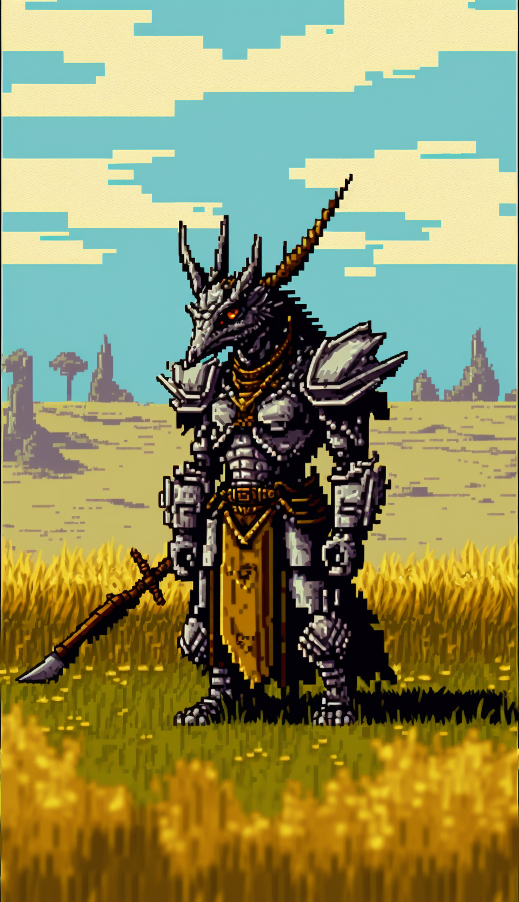
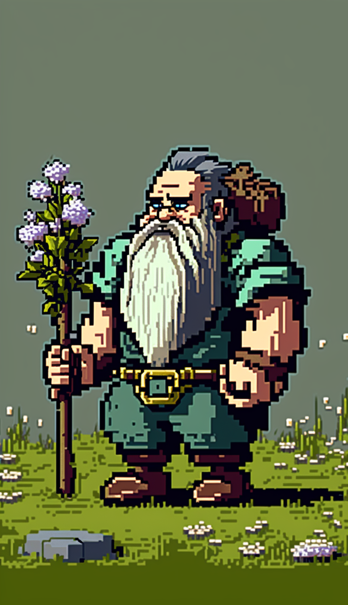
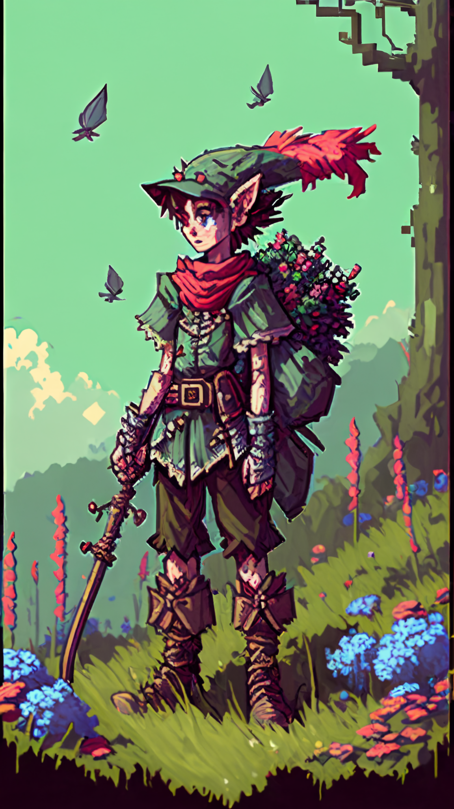
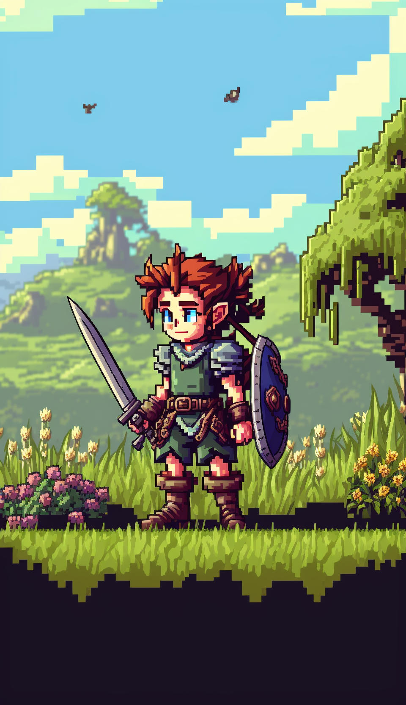
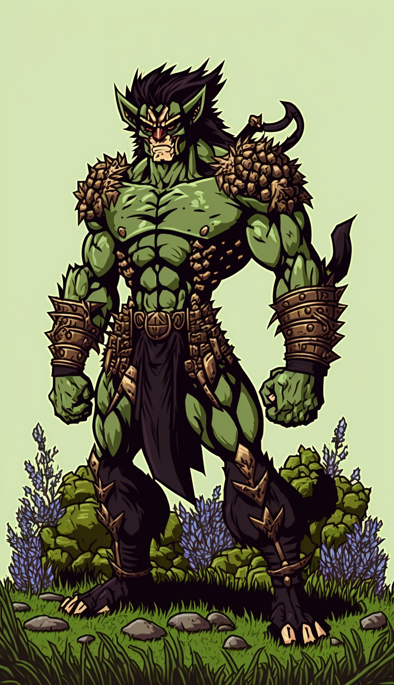

Guidebook: Races
BugBear

Bugbears are a brutish and aggressive race of humanoid creatures that resemble oversized goblins. They have thick fur covering their bodies, typically ranging from brown to gray in color, and are known for their brute strength and ferocity in battle. Bugbears stand over 6 feet tall and have long, powerful limbs that allow them to move quickly and with great force.
Their faces are often described as having a bear-like appearance, with large noses, sharp teeth, and small, beady eyes that seem to glow with malice. They are often adorned with crude tribal tattoos, piercings, and other decorations that indicate their rank and status within their community.
Bugbears are known for their cunning and savagery in combat, and are feared by many who have had the misfortune of crossing paths with them. They are skilled hunters and trackers, and often use their stealth and strength to overpower their prey or enemies. Despite their fearsome reputation, however, some Bugbears are capable of forming alliances and working with other races, although such relationships are usually based on mutual benefit rather than friendship or trust.
Dragonborn
Dragonborn are a proud and honorable race of humanoid creatures that resemble humanoid dragons. They have strong, muscular builds, and their scales can range in color from brass, bronze, copper, gold, silver, and red. Dragonborn have sharp claws and teeth, and their eyes have slit pupils like those of a reptile. Their heads are crowned with horns, and some also have spines or ridges running down their backs.
Dragonborn are renowned for their bravery and valor in battle, and they have a natural affinity for the element of fire. They also possess a powerful breath weapon that allows them to exhale a cone of fire, cold, acid, lightning, or poison. Dragonborn value honor and tradition, and they take great pride in their ancestry and lineage. They are often organized into clans or tribes, and they tend to be fiercely loyal to their own kind.
Despite their fearsome appearance, dragonborn are not inherently evil, nor are they mindless beasts. They possess their own unique culture, language, and history, and they can be found throughout the world in a variety of roles, from adventurers and warriors to scholars and artisans. Though they may sometimes be misunderstood or feared by other races due to their draconic features, dragonborn are a proud and noble people who strive to live up to the ideals of honor and respect.
Dwarf
Dwarves are a short, stocky humanoid race known for their toughness, resilience, and skill in metallurgy and stonework. They are typically between four and five feet tall and have a heavily muscled and compact build. Their skin is usually a deep tan or brown, and their hair and beards can be any shade of brown, black, or grey.
Dwarves are characterized by their distinctive facial hair, which they consider a badge of honor and a symbol of their craftsmanship. Their beards are long and thick, often braided and adorned with metal clasps or jewelry. They have large, expressive eyes that are usually deep-set beneath bushy eyebrows.
Dwarves have a natural resistance to poison and magic, and their thick, tough skin provides them with additional protection. They are also known for their excellent hearing and night vision, which allows them to navigate their underground cities and mines with ease.
Dwarves are a proud and hard-working people, deeply committed to their families, clans, and traditions. They are known for their love of beer and other strong spirits, and for their fierce loyalty to their friends and allies. Despite their gruff and often argumentative nature, they are a reliable and steadfast companion in times of trouble.
Elf
Elves are a graceful and slender race of humanoid beings that are known for their beauty, intelligence, and agility. They typically stand around 5 to 6 feet tall and have a lean and athletic build. Their skin color can vary from pale white to dark brown, and their hair ranges from white or silver to black or dark brown.
Elves are known for their pointed ears, which are longer and more pointed than those of humans. They have large, almond-shaped eyes that are usually green, blue, or brown in color. Their features are elegant and refined, with high cheekbones and sharp jawlines.
Elves are typically more magically inclined than other races, and they have a natural affinity for the natural world. They are often skilled in archery and swordplay, and their agility and quick reflexes make them formidable opponents in combat. They are also known for their long lifespans, with some elves living for centuries.
Elves are a proud and noble race, and they place great importance on tradition and their cultural heritage. They are often aloof and reserved around other races, but once they establish trust, they are fiercely loyal and protective of their friends and allies.
Gnome
Gnomes are a diminutive race of humanoids known for their mischievous nature, quick wit, and natural affinity for magic. They stand only about 3 to 4 feet tall, with slender builds and delicate features. Gnomes have smooth, hairless skin that ranges in color from pale ivory to deep brown. Their hair is typically brightly colored, ranging from fiery red to brilliant blue or green. Gnomes have pointed ears and large, expressive eyes that seem to sparkle with mischief.
In addition to their natural talents for illusion and enchantment magic, gnomes are known for their love of invention and tinkering. They are skilled engineers and craftsmen, creating complex devices and gadgets that are both practical and whimsical. Gnomes often live in close-knit communities deep in the forests or mountains, building elaborate burrows and underground dwellings that are hidden from prying eyes. Despite their diminutive size, gnomes are known for their bravery and adventurous spirit, and many of them embark on quests and adventures to satisfy their boundless curiosity and love of discovery.
Half-Elf

Half-elves are the result of the union between humans and elves, inheriting traits from both races. They typically have a lean and agile build like an elf but with slightly more human-like facial features, such as a less pronounced nose and ears.
Half-elves often have a more subtle grace and elegance than their human counterparts, and they tend to be taller than elves but shorter than humans. Their skin tone can range from pale to tan, and their hair and eye colors are often a mix of the traits of both parents.
Due to their mixed heritage, half-elves often struggle with their sense of identity and place in society, feeling like they don't quite fit in with either humans or elves. However, they can also be adaptable and versatile, able to navigate different social circles and environments with ease.
Halfling
Halflings are a small, nimble humanoid race known for their innate stealth and agility. They typically stand at around 3 to 4 feet tall and weigh around 40 to 60 pounds. Despite their small stature, halflings possess a great deal of strength and endurance, making them surprisingly tough and resilient.
Halflings have round, cheerful faces with rosy cheeks, bright eyes, and often a tuft of curly hair on their heads. They have pointed ears that are slightly longer and more pointed than those of humans. Halflings are also known for their hairy feet, which are strong and nimble, allowing them to traverse difficult terrain with ease.
Halflings are a friendly and sociable race, often living in tight-knit communities in rural areas such as farms or small villages. They enjoy good food, good company, and good stories, and are always eager to share their tales and adventures with others. Despite their love of peace and harmony, halflings are fierce fighters when provoked, using their quick reflexes and sharp wits to outmaneuver and outsmart their opponents.
Half-Orc

Half-orcs are a race that is often shunned and feared due to their mixed human and orc heritage. They have a tough, rugged appearance with a muscular build and sharp features that reflect their orcish ancestry. They have broad foreheads, prominent jaws, and pronounced brows. Their skin ranges from a dull green to a grayish-brown color, with some half-orcs having patches of coarse hair along their arms, legs, and backs. They have thick, strong hands, which are often calloused from their physical labor.
Half-orcs tend to be tall and strong, with powerful legs and broad shoulders. They are known for their endurance, which they inherited from their orcish side, making them capable of enduring long treks and intense physical activities. However, they are also known for their explosive tempers, which can be triggered easily due to their short fuses. Despite this, half-orcs can be fiercely loyal to those they trust, and their strength and determination make them valuable allies in combat.
Human

Humans are one of the most common and widespread races in the world. They are known for their adaptability, resilience, and versatility. Physically, they are similar to real-world humans, with a variety of skin tones, hair types, and facial features. However, in some fantasy worlds, humans may have some unique physical traits or abilities.
Humans are generally known for their curiosity, ambition, and willingness to take risks. They have a wide range of occupations, from farmers and craftsmen to adventurers and rulers. Due to their diversity and adaptability, humans often find themselves in leadership positions, whether it be in a small town or a powerful empire.
There are many different subraces of humans with their own distinct cultures and physical characteristics. For example, there may be desert-dwelling humans with darker skin and a talent for survival in harsh environments, or seafaring humans with webbed fingers and a natural affinity for water. Overall, humans are a versatile and integral part of many fantasy worlds.
Kaltok
The indigenous race to is called the Kaltok, a humanoid species with large, muscular builds and rugged, weather-beaten features. They have tan or green skin, dark hair, and piercing orange eyes. The Kaltok are fiercely territorial and have a long history of conflict with outsiders who encroach upon their lands. They live in the remote regions of the mountains and woods, where they hunt, fish, and gather wild plants for food.
The Kaltok have a unique culture and way of life that revolves around their close relationship with the natural world. They believe that all living things are connected and that every action has consequences. They have a deep reverence for the spirits of the land, and their shamans use their connection to the spirit world to guide the tribe and protect their territory.
The Kaltok are skilled hunters, trackers, and warriors, and they use primitive weapons such as spears, bows, and tomahawks. They also have a talent for stealth and camouflage, allowing them to move silently through the woods and mountains without detection.
While the Kaltok are distrustful of outsiders and fiercely protect their lands, they are not inherently evil or malicious. They will only attack those who they perceive as a threat to their way of life, and they have been known to show mercy to those who respect their traditions and customs. However, any attempt to colonize or exploit their lands is met with swift and brutal resistance.
Orc

Orcs are a robust, muscular humanoid race known for their physical strength and ferocity. They have a distinctly brutish and savage appearance, with broad shoulders, thick limbs, and heavy jaws. Orcs have a rough, dark skin tone that ranges from dark green to gray or brown. They often have coarse, shaggy hair and prominent tusks that jut out from their lower jaw.
Orcs are typically taller than humans and possess incredible physical endurance, allowing them to endure long marches or battles with ease. They are known for their aggression and love of battle, often seeking out conflict and glory on the battlefield. However, despite their violent tendencies, orcs have a strong sense of loyalty and honor, especially towards their clans or tribes.
Orcs are also known for their craftsmanship, particularly in metalworking and weaponry. They have a deep appreciation for finely crafted weapons and armor, often creating intricate designs and decorations to adorn their gear. Additionally, many orcs have a connection to nature, and some are known to be skilled trackers or herbalists.
Tiefling

Tieflings are a race of humanoids with fiendish heritage, often bearing physical features that reflect their infernal bloodline. They have distinctive traits such as elongated, pointed ears, fangs, and skin that ranges from a deep red to a gray or even a dark purple color. Some have horns, spikes or tails, while others have glowing eyes or markings on their skin.
Despite their demonic appearance, Tieflings are not inherently evil and possess free will like any other humanoid. However, their physical traits can often lead to prejudice and discrimination from other races. This has resulted in some Tieflings becoming isolated from society and forming their own communities, while others seek to prove their worth and earn the respect of others through their actions and deeds.
Tieflings have a natural affinity for magic, and many pursue arcane studies to hone their abilities. They are often drawn to professions such as warlocks, sorcerers, or rogues, but can also be found in a variety of other roles depending on their individual skills and interests. Despite their fiendish ancestry, many Tieflings have a strong sense of justice and can be fiercely loyal to their friends and allies.